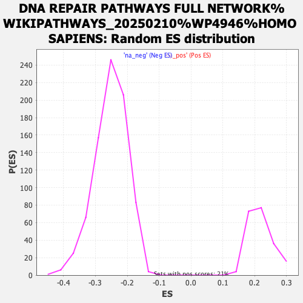

| | | Dataset | ranked_genes_2 |
| Phenotype | NoPhenotypeAvailable |
| Upregulated in class | na_neg |
| GeneSet | DNA REPAIR PATHWAYS FULL NETWORK%WIKIPATHWAYS_20250210%WP4946%HOMO SAPIENS |
| Enrichment Score (ES) | -0.5552892 |
| Normalized Enrichment Score (NES) | -2.2051797 |
| Nominal p-value | 0.0 |
| FDR q-value | 3.4531596E-4 |
| FWER p-Value | 0.006 |
Table: GSEA Results Summary
 Fig 1: Enrichment plot: DNA REPAIR PATHWAYS FULL NETWORK%WIKIPATHWAYS_20250210%WP4946%HOMO SAPIENS
Fig 1: Enrichment plot: DNA REPAIR PATHWAYS FULL NETWORK%WIKIPATHWAYS_20250210%WP4946%HOMO SAPIENS
Profile of the Running ES Score & Positions of GeneSet Members on the Rank Ordered List
| SYMBOL | RANK IN GENE LIST | RANK METRIC SCORE | RUNNING ES | CORE ENRICHMENT | | 1 | XRCC5 | 451 | 4.402 | -0.0184 | No |
| 2 | TDG | 921 | 3.655 | -0.0411 | No |
| 3 | RAD50 | 1091 | 3.450 | -0.0412 | No |
| 4 | RBX1 | 1202 | 3.302 | -0.0373 | No |
| 5 | POLM | 1228 | 3.275 | -0.0268 | No |
| 6 | NBN | 1523 | 2.982 | -0.0384 | No |
| 7 | CETN2 | 2108 | 2.415 | -0.0747 | No |
| 8 | GTF2H5 | 2527 | 2.061 | -0.0995 | No |
| 9 | HMGB1 | 2705 | 1.886 | -0.1061 | No |
| 10 | CDK7 | 2825 | 1.767 | -0.1087 | No |
| 11 | PNKP | 3409 | 1.305 | -0.1492 | No |
| 12 | NHEJ1 | 4287 | 0.699 | -0.2149 | No |
| 13 | APEX1 | 4300 | 0.691 | -0.2132 | No |
| 14 | H2AX | 4784 | 0.395 | -0.2494 | No |
| 15 | POLD4 | 4791 | 0.392 | -0.2484 | No |
| 16 | ERCC5 | 5320 | 0.139 | -0.2890 | No |
| 17 | MGMT | 6368 | -0.250 | -0.3697 | No |
| 18 | XPC | 6400 | -0.264 | -0.3711 | No |
| 19 | APEX2 | 6487 | -0.306 | -0.3766 | No |
| 20 | MUTYH | 6541 | -0.347 | -0.3794 | No |
| 21 | NEIL3 | 6686 | -0.414 | -0.3891 | No |
| 22 | MNAT1 | 7039 | -0.602 | -0.4142 | No |
| 23 | WDR48 | 7375 | -0.801 | -0.4373 | No |
| 24 | REV1 | 7666 | -1.001 | -0.4561 | No |
| 25 | POLE4 | 7771 | -1.076 | -0.4602 | No |
| 26 | POLI | 7792 | -1.087 | -0.4576 | No |
| 27 | CENPX | 7939 | -1.185 | -0.4645 | No |
| 28 | RAD51C | 8005 | -1.231 | -0.4649 | No |
| 29 | FANCC | 8367 | -1.466 | -0.4874 | No |
| 30 | GTF2H2 | 8436 | -1.526 | -0.4869 | No |
| 31 | CENPS | 8536 | -1.615 | -0.4885 | No |
| 32 | POLK | 8752 | -1.787 | -0.4985 | No |
| 33 | CHEK1 | 8833 | -1.840 | -0.4978 | No |
| 34 | BRCA2 | 8926 | -1.920 | -0.4976 | No |
| 35 | RFC3 | 9057 | -2.007 | -0.5002 | No |
| 36 | GTF2H3 | 9341 | -2.223 | -0.5138 | No |
| 37 | PALB2 | 9770 | -2.529 | -0.5375 | No |
| 38 | RPA3 | 9801 | -2.549 | -0.5302 | No |
| 39 | RAP1A | 9989 | -2.713 | -0.5345 | No |
| 40 | FAAP24 | 10007 | -2.733 | -0.5254 | No |
| 41 | ERCC1 | 10391 | -3.041 | -0.5437 | Yes |
| 42 | MPG | 10536 | -3.156 | -0.5430 | Yes |
| 43 | RAD52 | 10585 | -3.204 | -0.5346 | Yes |
| 44 | FANCM | 10592 | -3.207 | -0.5229 | Yes |
| 45 | MBD4 | 10817 | -3.411 | -0.5274 | Yes |
| 46 | POLD3 | 10910 | -3.501 | -0.5212 | Yes |
| 47 | WRN | 10945 | -3.528 | -0.5105 | Yes |
| 48 | NEIL2 | 11130 | -3.687 | -0.5108 | Yes |
| 49 | RAD54B | 11324 | -3.877 | -0.5112 | Yes |
| 50 | XPA | 11336 | -3.885 | -0.4973 | Yes |
| 51 | DDB2 | 11348 | -3.891 | -0.4834 | Yes |
| 52 | MSH2 | 11420 | -3.960 | -0.4739 | Yes |
| 53 | ATM | 11516 | -4.049 | -0.4659 | Yes |
| 54 | ATR | 11533 | -4.061 | -0.4517 | Yes |
| 55 | SMUG1 | 11675 | -4.212 | -0.4467 | Yes |
| 56 | RPA1 | 11901 | -4.453 | -0.4474 | Yes |
| 57 | PRKDC | 11955 | -4.496 | -0.4344 | Yes |
| 58 | DDB1 | 12125 | -4.688 | -0.4298 | Yes |
| 59 | FANCA | 12231 | -4.811 | -0.4197 | Yes |
| 60 | OGG1 | 12275 | -4.873 | -0.4046 | Yes |
| 61 | MSH6 | 12292 | -4.903 | -0.3872 | Yes |
| 62 | CCNH | 12345 | -4.974 | -0.3724 | Yes |
| 63 | FANCL | 12379 | -5.026 | -0.3559 | Yes |
| 64 | BRIP1 | 12418 | -5.077 | -0.3396 | Yes |
| 65 | FAN1 | 12439 | -5.102 | -0.3217 | Yes |
| 66 | POLE2 | 12472 | -5.154 | -0.3047 | Yes |
| 67 | RAD51 | 12482 | -5.167 | -0.2858 | Yes |
| 68 | ERCC2 | 12494 | -5.194 | -0.2669 | Yes |
| 69 | POLD2 | 12519 | -5.213 | -0.2490 | Yes |
| 70 | POLE | 12537 | -5.235 | -0.2304 | Yes |
| 71 | LIG1 | 12548 | -5.257 | -0.2112 | Yes |
| 72 | UNG | 12591 | -5.318 | -0.1943 | Yes |
| 73 | USP1 | 12592 | -5.320 | -0.1741 | Yes |
| 74 | PARP2 | 12663 | -5.453 | -0.1589 | Yes |
| 75 | MSH3 | 12745 | -5.620 | -0.1439 | Yes |
| 76 | RFC2 | 12777 | -5.753 | -0.1244 | Yes |
| 77 | RFC4 | 12782 | -5.753 | -0.1029 | Yes |
| 78 | BRCA1 | 12794 | -5.770 | -0.0818 | Yes |
| 79 | PCNA | 12816 | -5.828 | -0.0614 | Yes |
| 80 | LIG3 | 12836 | -5.859 | -0.0406 | Yes |
| 81 | FANCD2 | 12870 | -6.044 | -0.0202 | Yes |
| 82 | RFC1 | 12889 | -6.084 | 0.0015 | Yes |
Table: GSEA details [plain text format]

Fig 2: DNA REPAIR PATHWAYS FULL NETWORK%WIKIPATHWAYS_20250210%WP4946%HOMO SAPIENS: Random ES distribution
Gene set null distribution of ES for DNA REPAIR PATHWAYS FULL NETWORK%WIKIPATHWAYS_20250210%WP4946%HOMO SAPIENS